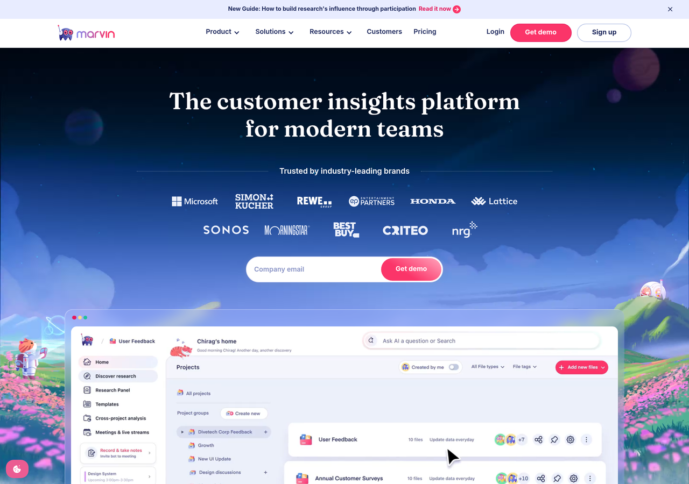
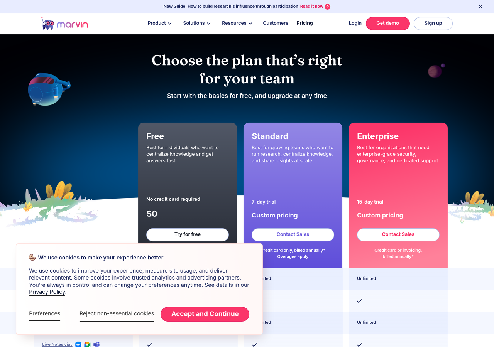

Marvin is a PLG product (real free tier, self-serve signup, generous limits) wearing sales-led marketing clothes (Get-demo dominates the homepage, /product is a 404, onboarding is human-assisted at scale). The Growth + Onboarding + Conversion PM hire is exactly the person who closes that gap. The audit is built around that thesis. Each finding pairs the actual page evidence with what it costs Marvin in funnel terms and how fast it's fixed.
A research-tools buyer arrives in one of three modes. The current funnel is built for the enterprise buyer who books a demo. The solo researcher and the team lead are technically served (Free tier exists) but not architecturally invited.


Four interactive demos of the systems a Growth + Onboarding + Conversion PM would ship in week one. Each one is interactive. Each one maps to a lifecycle stage in your JD.